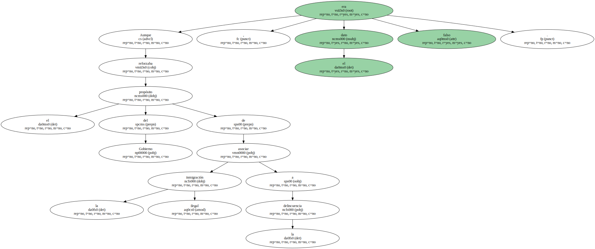
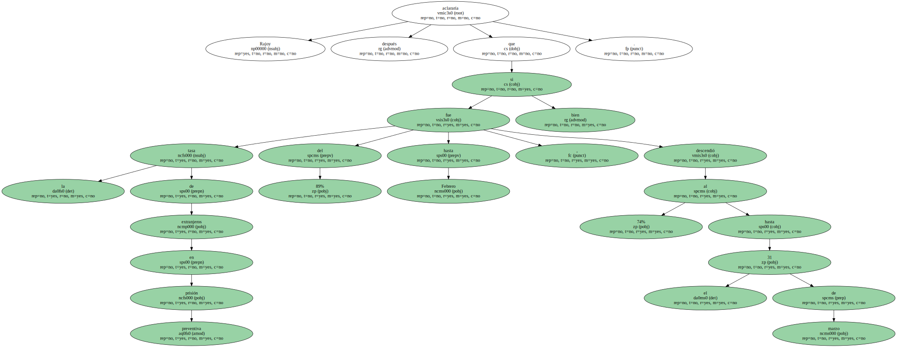
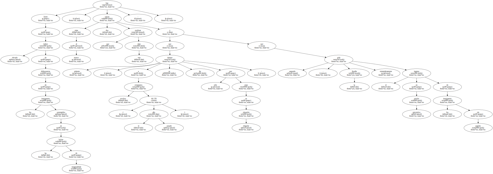
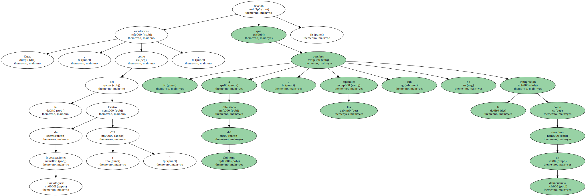
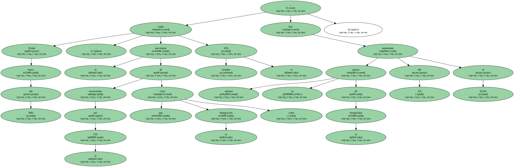

El 24 de abril , tres días después del éxito electoral de Le Pen , Aznar achacó el incremento de la inseguridad ciudadana en España a que " el 89% de los presos preventivos en este primer trimestre son inmigrantes ".

Aunque reforzaba el propósito del Gobierno de asociar la inmigración ilegal a la delincuencia , el dato era falso.
Rajoy aclararía después que la tasa de extranjeros en prisión preventiva fue del 89% hasta Febrero , si bien descendió al 74% hasta el 31 de marzo.
Junto al elevado índice de delincuencia de los inmigrantes sumergidos en las bolsas de marginalidad , hay al menos otras dos causas que explican este dato : primero , que a muchos extranjeros ( 44.139 el año pasado ) se les detiene sólo por estar en situación irregular ; y segundo , que la fiscalía pide sistemáticamente el ingreso en prisión preventiva de los inmigrantes sin papeles.
Otras estadísticas , como la del Centro de Investigaciones Sociológicas ( CIS ) , revelan que , a diferencia del Gobierno , los españoles aún no perciben la inmigración como sinónimo de delincuencia.
Desde enero del 2001 , el porcentaje de encuestados por el CIS que citan la inmigración como un " problema " ronda siempre el 16% ; quienes se quejan de la inseguridad han aumentado del 8,9 al 20,4%.
